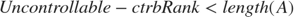
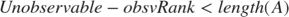
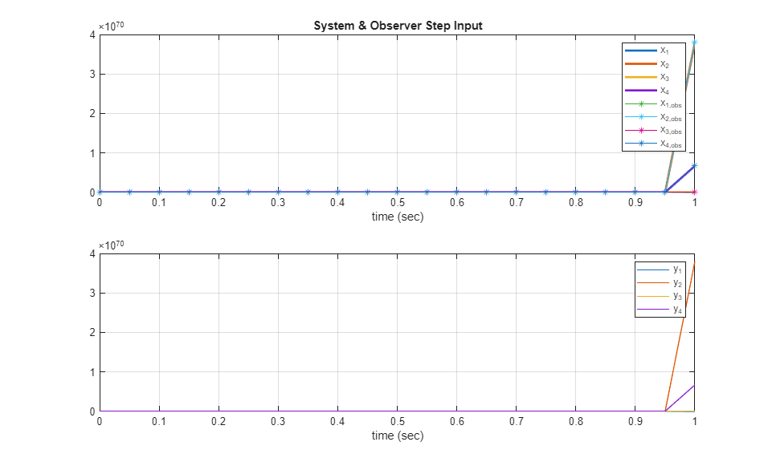
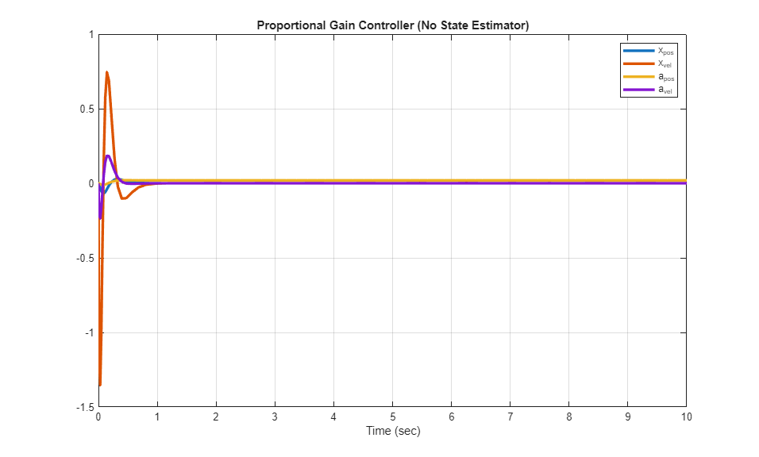
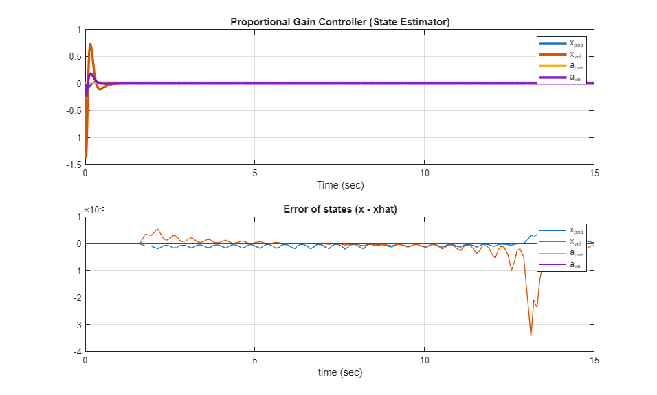
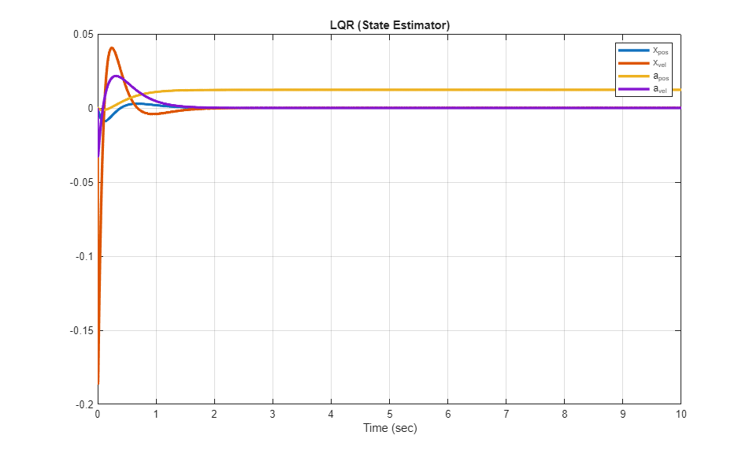

Minseg Robot Control Project EEP 547
Team Names: Jayce Gaddis & Matthew Russo
Contents
- Minseg Parameters
- Step 1: Setup System Matrices
- Step 2: Measurements of Minseg
- Step 3: Transfer Function
- Step 4: Characteristic Polynomial and Eigenvalues
- Step 5: Check for Stability
- Step 6: Check Transfer Function for Stability
- Step 7: Check for Controllabilty
- Step 8: Check for Observability
- Step 9: Transform into Canonical Form
- Step 10: Designing State Estimator with Pole Placement
- Step 11: State Estimator Simulink
- Step 12: Feedback via Pole Placement
- Step 13: Closing the Feedback Loop
- Step 14: Feedback Simulink Model and Step Response
- Step 15: Estimator With Feedback
- Step 16: PID Tuning
- Step 17: LQR Tuning
- Step 18: Sonar Sensor
Minseg Parameters
%Initializing clear; close all; clc; %Defining parameters g = 9.81; syms alpha; % Angle between minseg pendulum and vertical axis syms x; % traveling distance of the wheel syms L; % Distance between wheel center and pendulum CoM syms mp; % Mass of Pendulum syms Ip; % Moment of inertia at reference syms mw; % Mass of the wheel syms rw; % Radius of wheel syms Icmw; % Moment of inertia at center of mass of wheel syms kt; % Torque constant in Nm/A syms kb; % Back EMF constant in Vs/rad syms R; % Resistance in ohms
Step 1: Setup System Matrices
Simplifying A and B matrices by defining numerator and denumerator
den1_a = Icmw*(Ip+L^2*mp) + (L^2*mp*mw + Ip*(mp+mw))*rw^2;
num1_a = g*L*mp*(Icmw + (mp+mw)*rw^2);
num2_a = kt*(Icmw + rw*(mw*rw + mp*(L + rw)));
num3_a = g*L^2*mp^2*rw^2;
num4_a = kt*(Ip + L*mp*(L+rw));
A21 = num1_a/den1_a;
A22 = -kb*num2_a/(R*den1_a);
A24 = -kb*num2_a/(R*rw*den1_a);
A41 = num3_a/den1_a;
A42 = -kb*rw*num4_a/(R*den1_a);
A44 = -kb*num4_a/(R*den1_a);
%Defining the matrices A, B, C, and D
A_b = [0 1 0 0;
A21 A22 0 A24;
0 0 0 1;
A41 A42 0 A44];
B_b = [0;
-num2_a/(R*den1_a);
0
-num4_a*rw/(R*den1_a)];
C_b = eye(size(A_b));
D_b = [0;0;0;0];
Step 2: Measurements of Minseg
Measurements the physical parameters of our MinSeg system. The kt, Kb, and R values were provided for us. The rest of the parameters were calculated using various methods. While lengths and masses were measured with rulers and scales, the hardest to calculate was the moment of inertias.
The wheel's inertia was calculated using a ramp and finding the acceleration of the wheel. That acceleration was used to backcalculated the the inertia. The pendulum's inertia was calculated by using an equation with relation to its length and mass.
While there are values for both with and without batteries connected, this project operates without the use of batteries.
% Without Battery % Length to CoG (with wheels) L 95.83 mm % Length to CoG L 100 mm mp_m = 201/1000; L_m = 100/1000; Ip_m = mp_m*L_m^2; % With Battery % Length to CoG (with wheels) L 111.78 mm mp_m_b = 339/1000; L_m_b = 111.78/1000; measured_period_with_batt = 0.91; Ip_m_b = mp_m_b * g * L_m_b * (measured_period_with_batt / (2 * pi))^2; %fprintf("Measured Moment of Inertia: %.3e kg·m²\n", Ip_m_b); fprintf("Pendulum measured Moment of Inertia No Batt: %.3e kg·m²\n", Ip_m); % Wheel parameters dw_m = 42; % wheel diameter in mm rw_m = dw_m / 2 / 1000; % radius in meters mw_kg = 18 / 1000; % mass in kg time_down_ramp_s = 1.89; % time to roll distance (s) ramp_angle_deg = 3; % incline angle (degrees) ramp_length_m = 0.508; % ramp distance (m) % Compute acceleration down the ramp a = 2 * ramp_length_m / time_down_ramp_s^2; % m/s^2 % Compute wheel moment of inertia about center (two wheels total) Icmw_m = 2 * mw_kg * rw_m^2 * ((g * sind(ramp_angle_deg)) / a - 1); fprintf('Wheel inertia Icmw = %.3e kg·m²\n', Icmw_m); % Motor % Torque Constant kt 0.3233 Nm/A % Back EMF Kb 0.4953 Vs/rad % Resistance R 5.2628 ohms kt_m = 0.3233; kb_m = 0.4953; R_m = 5.2628; % Build substitution pairs sub_pairs = [ mp Ip L mw rw Icmw kt kb R ; mp_m Ip_m L_m mw_kg rw_m Icmw_m kt_m kb_m R_m ]; sub_pairs_batt = [ mp Ip L mw rw Icmw kt kb R ; mp_m_b Ip_m_b L_m_b mw_kg rw_m Icmw_m kt_m kb_m R_m ]; % Substitute measured values into A and B A_b = subs(A_b, sub_pairs(1,:), sub_pairs(2,:)); B_b = subs(B_b, sub_pairs(1,:), sub_pairs(2,:)); A_b = double(vpa(A_b,14)); B_b = double(vpa(B_b,14)); disp("A= ");disp(A_b); disp("B= ");disp(B_b);
Pendulum measured Moment of Inertia No Batt: 2.010e-03 kg·m²
Wheel inertia Icmw = 1.278e-05 kg·m²
A=
1.0e+03 *
0 0.0010 0 0
0.0825 -0.0618 0 -2.9451
0 0 0 0.0010
0.0067 -0.0109 0 -0.5169
B=
0
-124.8684
0
-21.9174
Step 3: Transfer Function
Transfer function matrix of the linearized system. The system possesses four transfer functions, all sharing the same denominator.
[tfnum,tfden] = ss2tf(A_b,B_b,C_b,D_b); tf1 = tf(tfnum(1,:),tfden) tf2 = tf(tfnum(2,:),tfden) tf3 = tf(tfnum(3,:),tfden) tf4 = tf(tfnum(4,:),tfden)
tf1 =
-124.9 s^2
----------------------------------------
s^4 + 578.8 s^3 - 82.47 s^2 - 2.295e04 s
Continuous-time transfer function.
tf2 =
-124.9 s^3 - 3.79e-14 s
----------------------------------------
s^4 + 578.8 s^3 - 82.47 s^2 - 2.295e04 s
Continuous-time transfer function.
tf3 =
-21.92 s^2 + 972.9
----------------------------------------
s^4 + 578.8 s^3 - 82.47 s^2 - 2.295e04 s
Continuous-time transfer function.
tf4 =
-21.92 s^3 + 972.9 s
----------------------------------------
s^4 + 578.8 s^3 - 82.47 s^2 - 2.295e04 s
Continuous-time transfer function.
Step 4: Characteristic Polynomial and Eigenvalues
The characteristic polynomial and eigenvalues of matrix A.
charPoly = charpoly(A_b); rootPoly = roots(charPoly); eigA_b = eig(A_b); disp("Characteristic Polynomial: "); disp(charPoly); disp("Roots: ");disp(rootPoly); disp("Eigenvalues: ");disp(eigA_b);
Characteristic Polynomial:
1.0e+04 *
0.0001 0.0579 -0.0082 -2.2946 0
Roots:
0
-578.8589
6.3332
-6.2592
Eigenvalues:
0
-578.8589
6.3332
-6.2592
Step 5: Check for Stability
Is the system asymptotically stable? Is it marginally stable? It is neither, the system is unstable. The system has four eignvalues, three are negative, while one is positive. This positive eignvalue is the reason the system in unstable.
if eigA_b < 0 fprintf('The system is asymptotically stable\n') else fprintf('The system is not asymptotically stable\n') end
The system is not asymptotically stable
Step 6: Check Transfer Function for Stability
The system is also not BIBO stable. For this system, the eignvalues and the poles are the same value. Since a single pole is positive, the system is not BIBO stable.
poles_tf1 = pole(tf1) if poles_tf1 < 0 fprintf('The system is BIBO stable\n') else fprintf('The system is not BIBO stable\n') end
poles_tf1 =
0
-578.8589
6.3332
-6.2592
The system is not BIBO stable
Step 7: Check for Controllabilty
To find the controllability of the system, a control matrix must be calculated. Comparing the rank of this matrix with the length of the A matrix will determine controllability.

ctrb_b = ctrb(A_b,B_b); ctrb_b_rank = rank(ctrb_b); if ctrb_b_rank < length(A_b) fprintf('The system is not controllable\n') else fprintf('The system is controllable\n') end
The system is controllable
Step 8: Check for Observability
To find the observability of the system, a observation matrix must be calculated. Comparing the rank of this matrix with the length of the A matrix will determine observability.

obsv_b = obsv(A_b,C_b); obsv_b_rank = rank(obsv_b); if obsv_b_rank < length(A_b) fprintf('The system is not observable\n') else fprintf('The system is observable\n') end
The system is observable
Step 9: Transform into Canonical Form
Transforming the state-space matrixes into CCF and OCF.
sys = ss(A_b, B_b, C_b, D_b); CCF = compreal(sys,"c"); CCF.A = CCF.A'; CCF.B = flip(CCF.B); CCF.C(1,:) = flip(tfnum(1,2:5)); CCF.C(2,:) = flip(tfnum(2,2:5)); CCF.C(3,:) = flip(tfnum(3,2:5)); CCF.C(4,:) = flip(tfnum(4,2:5)); OCF = ss(CCF.A',CCF.C',CCF.B',CCF.D'); disp('A Obs:');disp(OCF.A); disp('A Cont:');disp(CCF.A);
A Obs:
1.0e+04 *
0 0 0 0.0000
0.0001 0 0 2.2946
0 0.0001 0 0.0082
0 0 0.0001 -0.0579
A Cont:
1.0e+04 *
0 0.0001 0 0
0 0 0.0001 0
0 0 0 0.0001
0.0000 2.2946 0.0082 -0.0579
Step 10: Designing State Estimator with Pole Placement
Since the system is unstable, a closed-loop state estimator will be added. This full-dimensional observer will have poles that produce a stable system, by placing them all in the negative feild. As it is estimating the state of the system, these poles are picked to have a faster settling time than the open-loop system. An estimator gain L is calculated.
% Try ~8 times faster than % system????????????????????????????????????????????????????????????????????? desiredPoles = [-24+0.1j,-24-0.1j, -20, -10]*1.5;
Estimator gain L using desired pole placement
L = place(A_b', C_b', desiredPoles)';
disp('Estimator Gain L:'); disp(L);
Estimator Gain L:
1.0e+03 *
0.0360 0.0008 0 0
0.0826 -0.0258 0 -2.9451
0 0 0.0300 0.0010
0.0067 -0.0109 0 -0.5019
Verify the pole placement
A_obs = A_b - L*C_b;
disp("New Poles: ");disp(eig(A_obs));
New Poles: -36.0000 + 0.1500i -36.0000 - 0.1500i -30.0000 + 0.0000i -15.0000 + 0.0000i
Step 11: State Estimator Simulink
%Plot the estimated state-variables and output variables on the same graph. %I think this counts, but being fair and asking????????????????????????? % A simulink model of the linearized system was developed. The output of % the system is fed into the full-dimensional observer. To demonstrate the % values of the system, an input of a unit-step is used, while also % assuming the initial conditions are zero. sim("StateEstimator_project"); figure(1); subplot(2,1,1); plot(t, x, 'LineWidth', 2); hold on; plot(t,xhat, '*-'); grid on; xlabel('time (sec)'); legend('x_1', 'x_2', 'x_3','x_4', 'x_1_,_o_b_s', 'x_2_,_o_b_s', ... 'x_3_,_o_b_s','x_4_,_o_b_s'); title('System & Observer Step Input'); subplot(2,1,2); plot(t, y, '-'); grid on; xlabel('time (sec)'); legend('y_1','y_2','y_3','y_4');
The graphs show that the system is unstable as the values go off to infinity.
Step 12: Feedback via Pole Placement
To make the system stable, new poles are selected for the closed-loop model. With the new poles, a proportional gain K can be calculated for the closed-loop modeling. While this gain will be faster than the open-loop system, it will be slower than the observer system.
desiredPropGainPoles = [-21, -17, -14, -10];
K_pg = place(A_b, B_b, desiredPropGainPoles);
disp("Step 12- Proportional Gain Matrix: "); disp(K_pg);
Step 12- Proportional Gain Matrix: -20.9615 -2.5068 51.3725 37.8606
Step 13: Closing the Feedback Loop
Using the proportional gain K, a new state-space matrix must be created to represent the closed-loop system. This new system must then be checked if the new poles allow it to be stable.
Acl = A_b - B_b*K_pg; charPoly_cl = charpoly(Acl); disp("Closed Loop Charactaristic Polynomial: ");disp(charPoly_cl); eigenValues_cl = eig(Acl); disp("Closed Loop Eigenvalues: ");disp(eigenValues_cl); if eigenValues_cl < 0 fprintf('The system is asymptotically stable\n') else fprintf('The system is not asymptotically stable\n') end
Closed Loop Charactaristic Polynomial:
1.0e+04 *
0.0001 0.0062 0.1409 1.3888 4.9980
Closed Loop Eigenvalues:
-21.0000
-17.0000
-14.0000
-10.0000
The system is asymptotically stable
Step 14: Feedback Simulink Model and Step Response
A simulink model of the linearized closed-loop system was developed, without the state-estimator. Applying the proportional gain K to the system as feed back. To demonstrate the values of the system, an input of a unit-step is used while also assuming the initial conditions are zero.
sim("ProportionalGainController_NO_ESTIMATOR_project"); figure(2); plot(t, y, 'LineWidth',2.5); grid; title("Proportional Gain Controller (No State Estimator)"); legend('x_p_o_s', 'x_v_e_l', 'a_p_o_s', 'a_v_e_l') xlabel('Time (sec)')
Step 15: Estimator With Feedback
By combining the observer system with the feedback model, the entire system can become a closed-loop model that is based on the estimated states, xhat. The system will be stable with the new poles.
The error of the system is ploted with the difference between x and xhat.
sim("ProportionalGainController_w_Estimator_project"); figure(3); subplot(2,1,1); plot(t, y, 'LineWidth',2.5); grid; title("Proportional Gain Controller (State Estimator)"); legend('x_p_o_s', 'x_v_e_l', 'a_p_o_s', 'a_v_e_l'); xlabel('Time (sec)'); subplot(2,1,2); plot(t, x_e, '-'); grid on; title("Error of states (x - xhat)"); xlabel('time (sec)'); legend('x_p_o_s', 'x_v_e_l', 'a_p_o_s', 'a_v_e_l');
%The low error values show that this closed-loop estimator system is %accurate for all the states.
Step 16: PID Tuning
A) Demonstrate the feedback control system using an LQR controller. B) Demonstrate the feedback control system using a PID controller (You could try PI, PD, and PID.). Using the model below, we can use MATLAB's built in PID functions to give us our proportional, integral, and derivative gains. Additionally we can calculate the poles and zeros to see if the system with PID feedback is stable.
Step 17: LQR Tuning
Another method of creating the feedback system is to use an LQR controller. By selecting the R and Q values, a new feedback K can be calculated. The MinSeg robot uses this method for operating.
R = [75]; Q = diag([10000, 1, 500000, 5000]); KLQR = lqr(A_b, B_b, Q, R); disp("KLQR: ");disp(KLQR); lqr_poles = eig(A_b - B_b*KLQR) K_pg = KLQR; sim("ProportionalGainController_NO_ESTIMATOR_project"); figure(4); plot(t, y, 'LineWidth',2.5); grid; title("LQR (State Estimator)"); legend('x_p_o_s', 'x_v_e_l', 'a_p_o_s', 'a_v_e_l'); xlabel('Time (sec)');
KLQR: -93.3999 -13.3790 81.6497 74.2481 lqr_poles = -606.0488 -7.6888 -4.7224 -3.6098
Step 18: Sonar Sensor
Use a sonar sensor to implement some type of feedback control. One option would be to implement an alert system on the balancing MinSeg robot, which generates sound as the distance between MinSeg robot and an object is less than certain threshold by using an ultrasonic sensor and a speaker. As the balancing robot approaches an object, the alert system should increase the volume, frequency, or tone of an alerting sound. This part is open for you to be creative to use the sonar sensor. Demonstrate this in a video or live during the project presentation.